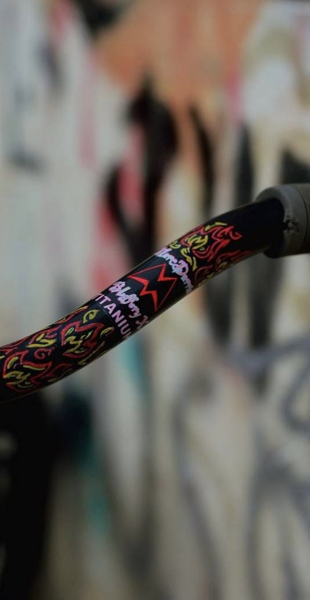
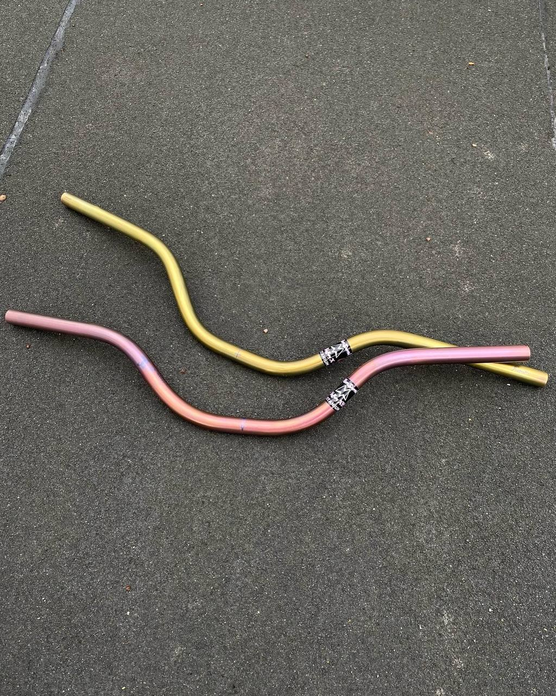
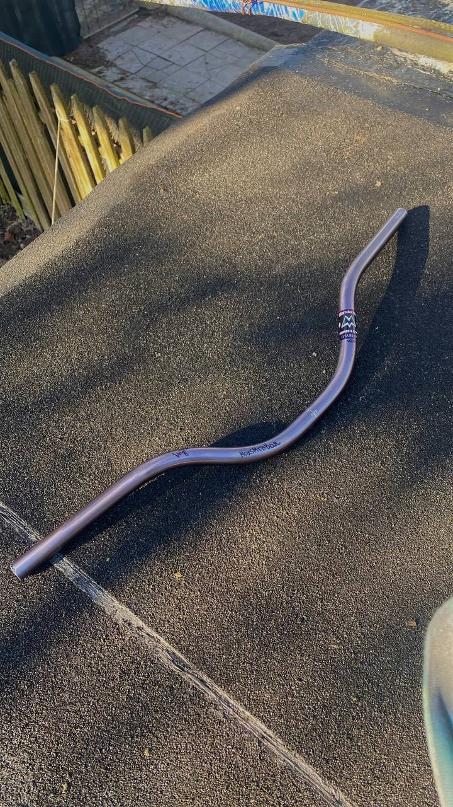

Hey everyone! We have been making bicycle handlebars for 4 years under our brand MarcDarrial Industry, also knowing as MCDR:) We want to boost our titanium bars, which you can order with your own design and geometry^^ We have 55mm, 70, 90,
95, 105, 115 and 120mm rises, anodizing colors, stickerbombing, spacers for 25.4mm stem and much more.

We have recently started anodizing our titanium handlebars! The color scheme can be found in the configurator, and there are also several photos of colored handlebars on this page. By adding drawings with an engraver, this drawings can also
be anodized with any color that is to the left on scheme of the main bar color.
At first times we made stainless steel handlebars which turned out to be not strong enough after several tests by our team of riders. After that, in the fall of 2020 we found and bought the first batch of low-carbon steel tubes. The handlebars
made from it proved to be stronger, so we continued to produce and sell them until 2022, adding heat treatment and standard colors. The moment when we discovered the possibility of producing titanium handlebars came in the summer of that year,
when a customer sent us a titanium pipe he had bought on a marketplace. The characteristics of this material turned out to be incredibly better than the previous ones. Since then, we have started buying a lot of titanium and producing the
most steering wheels from this material and selling them abroad.


Designs with drawings are made with a brush and acrylic paint, after which the handlebar is varnished. The most popular color is called “Ablaze Dark” with fires on surface
Painte designes "Ablaze Dark"

The most popular anodized shades
Aurum & pink
White night

